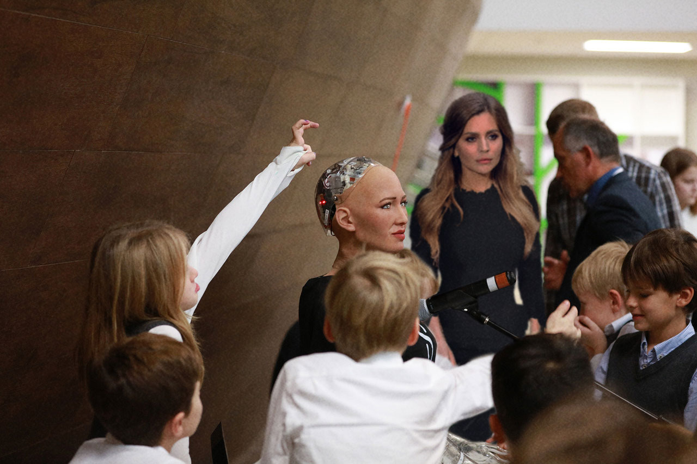
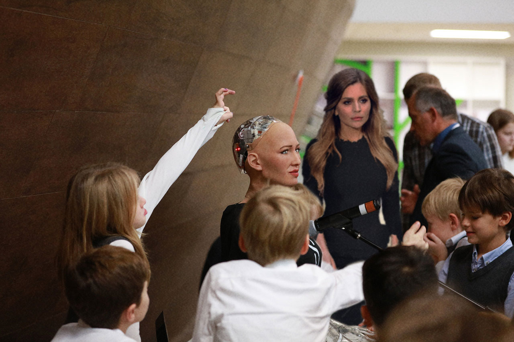

Sophia
Sophia is a social humanoid robot developed by Hong Kong-based company Hanson Robotics. Sophia was activated on April 19, 2015 and made her first public appearance at South by Southwest Festival (SXSW) in mid-March 2016 in Austin, Texas, United States. She is able to display more than 62 facial expressions. She has a procelain skin, a slender nose, an intriduing smile, and eyes that seen to change colour with the light. Sophia has been covered by media around the globe and has participated in many high-profile interviews. While interviewers around the world have been impressed by the sophistication of many of Sophia's responses to their questions, the bulk of Sophia's meaningful statements are believed by experts to be somewhat scripted.
 
